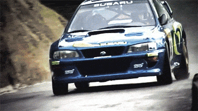
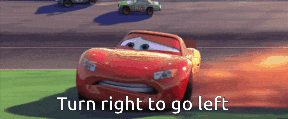
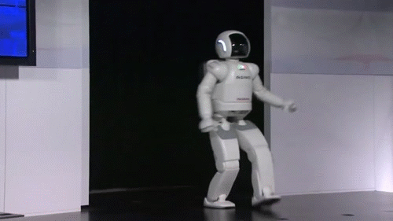

Drifting
Introduction

Preface: My (Tyler) Background and Motivation
I began working on drifting as a way to start breaking into Reinforcement Learning. My background prior was mostly in Dynamics & Control. Throughout this project, I didn't even know how PPO worked!
As robot learning invites more communities from computer vision, data science, machine learning, and language, I want to stress that engineering physics is an inescapable aspect of robotics.
For this reason, I hope the drifting task helps to introduce beginning roboticists to the challenges and delights of problems deeply rooted in Dynamics & Control.
Welcome to the world of always-out-of-distribution!
Drifting has been a difficult problem in both optimal control and reinforcement learning. While there are many reasons why, one of the main issues is this:

In addition, the maneuver is unstable. In a physical system, we call a state "unstable" if the world naturally wants to move away from it. For example, standing on one leg or balancing a pencil on its tip. Without precisely controlling a drift, the car will very easily spin out or come to a stop.
However, instability is extremely natural for animals. In fact, we often use it to our advantage (like running and jumping). For a long time, robots were always built to be 100% stable all of the time. That's why they used to look like this:

Controlled Instability is currently one of the many things that separates animals apart from robots for physical tasks. As it turns out, drifting happens to be a perfect task to get some hands-on experience for this without breaking the bank. Because, to execute a drift, the robot must first destabilize itself then quickly regain control after the turn. But, one wrong move and it will easily spin out.
So, how do we teach the robot to drift?
Environment
Assuming you've read about configclass and our config structure in
Installation, Setup & Codebase, we'll be referencing the
MushrDriftRLEnvCfg here. You can take a quick scan yourself first, or just
follow along:
Observations (Policy Input)
@configclass
class PolicyCfg(ObsGroup):
"""Observations for policy group."""
root_pos_w_term = ObsTerm( # meters
func=mdp.root_pos_w, noise=Gnoise(mean=0., std=0.1),
)
root_euler_xyz_term = ObsTerm( # radians
func=root_euler_xyz, noise=Gnoise(mean=0., std=0.1),
)
base_lin_vel_term = ObsTerm( # m/s
func=mdp.base_lin_vel, noise=Gnoise(mean=0., std=0.5),
)
base_ang_vel_term = ObsTerm( # rad/s
func=mdp.base_ang_vel, noise=Gnoise(std=0.4),
)
last_action_term = ObsTerm( # [m/s, (-1, 1)]
func=mdp.last_action, clip=(-1., 1.),
) # TODO: get from ClipAction wrapper or action space
def __post_init__(self):
self.concatenate_terms = True
self.enable_corruption = FalseTerms
Toggle the term for an explanation.
root_pos_w_term: position of the robot relative to the world frame.
Robot needs to know how far off track it is. This could also have been position relative to track!
root_euler_xyz_term: (euler) rotation angles in x-y-z sequence. A.k.a. roll-pitch-yaw.
Need to know how much to rotate to make the turn. Roll-and-pitch are probably not necessary, though.
base_lin_vel_term: linear velocity in robot frame.
How fast is too fast?
base_ang_vel_term: angular velocity in robot frame.
Am I turning too fast? Will I slip out?
last_action_term: previously executed action.
Probably not necessary. In fact, it might be hurting the performance through overfitting. I kinda forgot this was in here, to be honest.
I think this term is more important in complex tasks where you want to prevent the robot from repeatedly trying things that don't work.
Actions (Policy Output)
Our action space is target_velocity and target_steering_angle.
Notice that they're targets! We can't actually control these things exactly,
because the only things we actually have control over is the voltages of the steering
servo and drive motor.
A lower-level controller has to try and track your speeds through high-frequency feedback control.
Our car controller also had to take specifically steering targets which are a couple lines of math away from servo angle. We also locked our differential for the drifting task. So no extra computation is necessary beyond this. Though, this is not true for the 4-wheel-drive tasks (elevation, visual)!
class RCCarRWDAction(ackermann_actions.AckermannAction):
""" MuSHR only uses tan steering and open diff throttle for drifting
TODO: simulated open diff throttle """
def _calculate_ackermann_angles_and_velocities(self, target_velocity, target_steering_angle):
""" Calculates the steering angles for the left and right front wheels and the
wheel velocities based on the Ackermann steering geometry. """
tan_steering = torch.tan(target_steering_angle)
target_ang_vel = target_velocity / self.wheel_rad # tan steering and fixed rear throttle
delta_left = tan_steering
delta_right = tan_steering
v_back_left = target_ang_vel
v_back_right = target_ang_vel
throttle = torch.stack([v_back_left, v_back_right], dim=1)
return delta_left, delta_right, throttle@configclass
class MushrRWDActionCfg:
throttle_steer = RCCarRWDActionCfg(
wheel_joint_names=[
"back_left_wheel_throttle", "back_right_wheel_throttle",
],
steering_joint_names=[
"front_left_wheel_steer", "front_right_wheel_steer",
],
base_length=0.325, base_width=0.2,
wheel_radius=0.05, scale=(3.0, 0.488), no_reverse=True,
bounding_strategy="clip", asset_name="robot",
)
Notice that we only provide back_left_wheel_throttle and
back_right_wheel_throttle to the wheel_joint_names which
indicate the driven wheels. On the other hand, the 4-wheel-drive will provide all four
wheels as driven wheels.
Rewards
The bread and butter of RL. You'll find yourself changing rewards a bunch and should get cozy with these. We organize our rewards into two categories: Task and Shaping rewards.
Task Rewards
def vel_dist(env, speed_target: float=MAX_SPEED, offset: float=-MAX_SPEED**2):
lin_vel = mdp.base_lin_vel(env)
ground_speed = torch.norm(lin_vel[..., :2], dim=-1)
speed_dist = (ground_speed - speed_target) ** 2 + offset
return speed_dist # speed targetSimple — keep your speed up!
def cross_track_dist(env, straight: float,
track_radius: float=(CORNER_IN_RADIUS + CORNER_OUT_RADIUS) / 2,
offset: float=-1., p: float=1.0):
"""Measures distance from a given radius on the track.
Defaults to the middle of the track."""
poses = mdp.root_pos_w(env)
on_straights = torch.abs(poses[..., 1]) < straight
sq_ctd = torch.where(on_straights,
torch.where(poses[..., 0] > 0, # Straights
(poses[..., 0] - track_radius)**2, # Quadrant 1
(poses[..., 0] + track_radius)**2), # Quadrant 2
torch.where(poses[..., 1] > 0, # Corners
(torch.sqrt((poses[..., 1] - straight)**2 + poses[..., 0]**2) - track_radius)**2, # Positive y Turn
(torch.sqrt((poses[..., 1] + straight)**2 + poses[..., 0]**2) - track_radius)**2, # Negative y Turn
)
)
ctd = torch.sqrt(sq_ctd) + offset
return torch.pow(ctd, p)
Lots of lines here — but we're basically cutting up the xy-plane into two areas:
straights and turns. This lets us easily change the size of the oval track through two
parameters: straight (the length of the straight) and
track_radius (how large the turns are). Then, we reward how close the
robot is to this oval "racing-line".
I want to point out that a lot of prior RL methods to drifting include notions of time in their racing line. Notice, we don't do that. This is much harder! The robot has to figure out when to leave the line in order for it to execute the drift.
def side_slip(env, min_thresh: float, max_thresh: float, min_vel_x: float=0.5):
vel = mdp.base_lin_vel(env)
slip_angle = torch.abs(torch.atan2(vel[..., 1], vel[..., 0]))
valid_angle = torch.where(torch.logical_or(
torch.abs(vel[..., 0]) < min_vel_x, slip_angle > max_thresh), 0.0, slip_angle
) # Discount lateral vel from steering
valid_angle = torch.where(valid_angle < min_thresh, 0.0, valid_angle)
# Clamp unstable angles. Harder than zeroing for heavy, unstable vehicles
# valid_angle = torch.clamp(valid_angle, max=max_thresh)
return valid_angleHere's our first bit of physics! The side-slip angle is the angle between the heading of the robot and its global velocity. In theory, a large side-slip angle means the vehicle is drifting. BUT, it can also mean the vehicle is just spinning out of control. We enforce thresholds to make sure that the robot only gets rewarded for "stable" slip-angles. These are generally angles within its steering capacity so that it can always regain control if needed.
We'll see that this reward is quite finicky and we'll have to shape it a bit in order to get the behavior we desire.
def off_track(env, straight, corner_out_radius):
poses = mdp.root_pos_w(env)
penalty = torch.where(torch.abs(poses[..., 1]) < straight,
torch.where(torch.abs(poses[..., 0]) > corner_out_radius, 1, 0),
torch.where(poses[..., 1] > 0,
torch.where((poses[..., 1] - straight)**2 + poses[..., 0]**2 > corner_out_radius**2, 1, 0),
torch.where((poses[..., 1] + straight)**2 + poses[..., 0]**2 > corner_out_radius**2, 1, 0)))
return penaltyDon't leave the track.
Shaping Rewards
Your Task rewards should be the minimum description of what you want the robot to do. They are often sparse and don't enforce much structure. Ideally, RL algorithms are able to solve the task with just these rewards through clever exploration-exploitation. However, if the task is difficult, the robot will need some extra help getting there. Shaping terms usually provide denser signals that help guide the optimization process towards the desired behavior. But, you have to be careful with over-prescribing rewards as they very often mislead the agent. Reward engineering is easily more art than science. So, as you try and build intuition, remember that there's no right answer!
def track_progress_rate(env):
'''Estimate track progress by positive z-axis angular velocity around the environment'''
asset: RigidObject = env.scene[SceneEntityCfg("robot").name]
root_ang_vel = asset.data.root_link_ang_vel_w # this is different than the mdp one
progress_rate = root_ang_vel[..., 2]
return progress_rateI found that the robot eventually starts executing the "Scandinavian flick" to just completely turn around and then drive the other way. In my personal experience with the RC car, it does seem to be more dynamically stable than a turn with some radius. This reward makes sure that the robot keeps driving clockwise around the track.
def energy_through_turn(env, straight: float):
poses = mdp.root_pos_w(env)
speed = torch.norm(mdp.base_lin_vel(env), dim=-1)
energy_through_turn = torch.where(torch.abs(poses[..., 1]) > straight, speed**2, 0.)
return energy_through_turnThis encourages the robot to speed up through turns to prevent it from just turning normally.
Training
Launch drift training with the bundled config:
python scripts/train_rl.py --headless -r RSS_DRIFT_CONFIG
See Setup for how Hydra lets you override any reward
weight or parameter from the command line — e.g. tuning the
side_slip weight while you build intuition.
References
- Demonstrating Wheeled Lab: Modern Sim2Real for Low-cost, Open-source Wheeled Robotics (arXiv:2502.07380)
- Wheeled Lab codebase on GitHub
- Steven Gong — Sideslip Angle notes